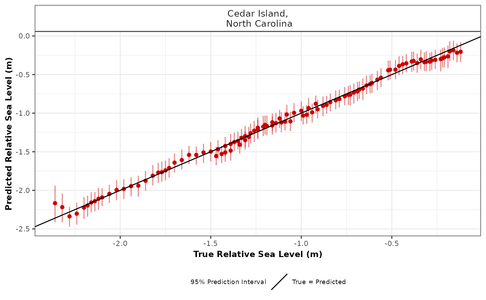

R/cross_val_check.R
cross_val_check.RdCross validation check for spline in time, spline in space time and GAM in order to select the most appropriate number of knots when creating basis functions.
cross_val_check(
data,
prediction_grid_res = 50,
spline_nseg = NULL,
spline_nseg_t = 20,
spline_nseg_st = 6,
n_iterations = 1000,
n_burnin = 100,
n_thin = 5,
n_chains = 2,
model_type,
n_fold = 5,
seed = NULL,
CI = 0.95
)Raw input data
Resolution of grid. Predictions over every 50 years(default) can vary based on user preference, as larger values will reduce computational run time.
This setting is focused on the Noisy Input Spline model. It provides the number of segments used to create basis functions.
This setting is focused on the Noisy Input Generalised Additive Model. It provides the number of segments used to create basis functions.
This setting is focused on the Noisy Input Generalised Additive Model. It provides the number of segments used to create basis functions.
Number of iterations. Increasing this value will increase the computational run time.
Size of burn-in. This number removes a certain number of samples at the beginning.
Amount of thinning.
Number of MCMC chains. The number of times the model will be run.
The user selects their statistical model type. The user can select a Noisy Input Spline in Time using "ni_spline_t". The user can select a Noisy Input Spline in Space Time using "ni_spline_st". The user can select a Noisy Input Generalised Additive Model using "ni_gam_decomp".
Number of folds required in the cross validation. The default is 5 fold cross validation.
If the user wants reproducible results, seed stores the output when random selection was used in the creation of the cross validation.
Size of the credible interval required by the user. The default is 0.95 corresponding to 95%.
A list containing the model comparison measures, e.g. Root Mean Square Error (RMSE), and plot of true vs predicted values
# \donttest{
data <- NAACproxydata %>% dplyr::filter(Site == "Cedar Island")
cross_val_check(data = data, model_type = "ni_spline_t",n_fold = 2)
#> module glm loaded
#> Compiling model graph
#> Resolving undeclared variables
#> Allocating nodes
#> Graph information:
#> Observed stochastic nodes: 52
#> Unobserved stochastic nodes: 15
#> Total graph size: 915
#>
#> Initializing model
#>
#> Compiling model graph
#> Resolving undeclared variables
#> Allocating nodes
#> Graph information:
#> Observed stochastic nodes: 52
#> Unobserved stochastic nodes: 123
#> Total graph size: 5528
#>
#> Initializing model
#>
#> No convergence issues detected.
#> Compiling model graph
#> Resolving undeclared variables
#> Allocating nodes
#> Graph information:
#> Observed stochastic nodes: 52
#> Unobserved stochastic nodes: 15
#> Total graph size: 915
#>
#> Initializing model
#>
#> Compiling model graph
#> Resolving undeclared variables
#> Allocating nodes
#> Graph information:
#> Observed stochastic nodes: 52
#> Unobserved stochastic nodes: 122
#> Total graph size: 5494
#>
#> Initializing model
#>
#> No convergence issues detected.
#> $ME_MAE_RSME_fold_site
#> # A tibble: 2 × 5
#> SiteName CV_fold_number RSME MAE ME
#> <fct> <fct> <dbl> <dbl> <dbl>
#> 1 "Cedar Island,\n North Carolina" 1 0.0237 0.0273 0.00329
#> 2 "Cedar Island,\n North Carolina" 2 0.0428 0.0358 -0.00594
#>
#> $ME_MAE_RSME_site
#> # A tibble: 1 × 4
#> SiteName RSME MAE ME
#> <fct> <dbl> <dbl> <dbl>
#> 1 "Cedar Island,\n North Carolina" 0.0135 0.0316 -0.00132
#>
#> $ME_MAE_RSME_overall
#> RSME MAE ME
#> 1 0.01350069 0.0315574 -0.001323852
#>
#> $ME_MAE_RSME_fold
#> # A tibble: 2 × 4
#> CV_fold_number RSME MAE ME
#> <fct> <dbl> <dbl> <dbl>
#> 1 1 0.0237 0.0273 0.00329
#> 2 2 0.0428 0.0358 -0.00594
#>
#> $true_pred_plot

#>
#> $CV_model_df
#> Longitude Latitude SiteName data_type_id Age
#> 1 -76.38 34.971 Cedar Island,\n North Carolina ProxyRecord -731
#> 2 -76.38 34.971 Cedar Island,\n North Carolina ProxyRecord -661
#> 3 -76.38 34.971 Cedar Island,\n North Carolina ProxyRecord -333
#> 4 -76.38 34.971 Cedar Island,\n North Carolina ProxyRecord -270
#> 5 -76.38 34.971 Cedar Island,\n North Carolina ProxyRecord -143
#> 6 -76.38 34.971 Cedar Island,\n North Carolina ProxyRecord 15
#> 7 -76.38 34.971 Cedar Island,\n North Carolina ProxyRecord 153
#> 8 -76.38 34.971 Cedar Island,\n North Carolina ProxyRecord 229
#> 9 -76.38 34.971 Cedar Island,\n North Carolina ProxyRecord 278
#> 10 -76.38 34.971 Cedar Island,\n North Carolina ProxyRecord 312
#> 11 -76.38 34.971 Cedar Island,\n North Carolina ProxyRecord 346
#> 12 -76.38 34.971 Cedar Island,\n North Carolina ProxyRecord 586
#> 13 -76.38 34.971 Cedar Island,\n North Carolina ProxyRecord 604
#> 14 -76.38 34.971 Cedar Island,\n North Carolina ProxyRecord 623
#> 15 -76.38 34.971 Cedar Island,\n North Carolina ProxyRecord 625
#> 16 -76.38 34.971 Cedar Island,\n North Carolina ProxyRecord 725
#> 17 -76.38 34.971 Cedar Island,\n North Carolina ProxyRecord 745
#> 18 -76.38 34.971 Cedar Island,\n North Carolina ProxyRecord 763
#> 19 -76.38 34.971 Cedar Island,\n North Carolina ProxyRecord 789
#> 20 -76.38 34.971 Cedar Island,\n North Carolina ProxyRecord 860
#> 21 -76.38 34.971 Cedar Island,\n North Carolina ProxyRecord 883
#> 22 -76.38 34.971 Cedar Island,\n North Carolina ProxyRecord 895
#> 23 -76.38 34.971 Cedar Island,\n North Carolina ProxyRecord 941
#> 24 -76.38 34.971 Cedar Island,\n North Carolina ProxyRecord 983
#> 25 -76.38 34.971 Cedar Island,\n North Carolina ProxyRecord 1002
#> 26 -76.38 34.971 Cedar Island,\n North Carolina ProxyRecord 1082
#> 27 -76.38 34.971 Cedar Island,\n North Carolina ProxyRecord 1093
#> 28 -76.38 34.971 Cedar Island,\n North Carolina ProxyRecord 1146
#> 29 -76.38 34.971 Cedar Island,\n North Carolina ProxyRecord 1155
#> 30 -76.38 34.971 Cedar Island,\n North Carolina ProxyRecord 1159
#> 31 -76.38 34.971 Cedar Island,\n North Carolina ProxyRecord 1178
#> 32 -76.38 34.971 Cedar Island,\n North Carolina ProxyRecord 1322
#> 33 -76.38 34.971 Cedar Island,\n North Carolina ProxyRecord 1354
#> 34 -76.38 34.971 Cedar Island,\n North Carolina ProxyRecord 1389
#> 35 -76.38 34.971 Cedar Island,\n North Carolina ProxyRecord 1460
#> 36 -76.38 34.971 Cedar Island,\n North Carolina ProxyRecord 1468
#> 37 -76.38 34.971 Cedar Island,\n North Carolina ProxyRecord 1525
#> 38 -76.38 34.971 Cedar Island,\n North Carolina ProxyRecord 1543
#> 39 -76.38 34.971 Cedar Island,\n North Carolina ProxyRecord 1570
#> 40 -76.38 34.971 Cedar Island,\n North Carolina ProxyRecord 1644
#> 41 -76.38 34.971 Cedar Island,\n North Carolina ProxyRecord 1653
#> 42 -76.38 34.971 Cedar Island,\n North Carolina ProxyRecord 1669
#> 43 -76.38 34.971 Cedar Island,\n North Carolina ProxyRecord 1725
#> 44 -76.38 34.971 Cedar Island,\n North Carolina ProxyRecord 1864
#> 45 -76.38 34.971 Cedar Island,\n North Carolina ProxyRecord 1885
#> 46 -76.38 34.971 Cedar Island,\n North Carolina ProxyRecord 1910
#> 47 -76.38 34.971 Cedar Island,\n North Carolina ProxyRecord 1934
#> 48 -76.38 34.971 Cedar Island,\n North Carolina ProxyRecord 1937
#> 49 -76.38 34.971 Cedar Island,\n North Carolina ProxyRecord 1963
#> 50 -76.38 34.971 Cedar Island,\n North Carolina ProxyRecord 1974
#> 51 -76.38 34.971 Cedar Island,\n North Carolina ProxyRecord 1979
#> 52 -76.38 34.971 Cedar Island,\n North Carolina ProxyRecord 2005
#> 53 -76.38 34.971 Cedar Island,\n North Carolina ProxyRecord -800
#> 54 -76.38 34.971 Cedar Island,\n North Carolina ProxyRecord -525
#> 55 -76.38 34.971 Cedar Island,\n North Carolina ProxyRecord -211
#> 56 -76.38 34.971 Cedar Island,\n North Carolina ProxyRecord -174
#> 57 -76.38 34.971 Cedar Island,\n North Carolina ProxyRecord -112
#> 58 -76.38 34.971 Cedar Island,\n North Carolina ProxyRecord -50
#> 59 -76.38 34.971 Cedar Island,\n North Carolina ProxyRecord 46
#> 60 -76.38 34.971 Cedar Island,\n North Carolina ProxyRecord 73
#> 61 -76.38 34.971 Cedar Island,\n North Carolina ProxyRecord 100
#> 62 -76.38 34.971 Cedar Island,\n North Carolina ProxyRecord 381
#> 63 -76.38 34.971 Cedar Island,\n North Carolina ProxyRecord 434
#> 64 -76.38 34.971 Cedar Island,\n North Carolina ProxyRecord 505
#> 65 -76.38 34.971 Cedar Island,\n North Carolina ProxyRecord 568
#> 66 -76.38 34.971 Cedar Island,\n North Carolina ProxyRecord 572
#> 67 -76.38 34.971 Cedar Island,\n North Carolina ProxyRecord 605
#> 68 -76.38 34.971 Cedar Island,\n North Carolina ProxyRecord 659
#> 69 -76.38 34.971 Cedar Island,\n North Carolina ProxyRecord 672
#> 70 -76.38 34.971 Cedar Island,\n North Carolina ProxyRecord 818
#> 71 -76.38 34.971 Cedar Island,\n North Carolina ProxyRecord 825
#> 72 -76.38 34.971 Cedar Island,\n North Carolina ProxyRecord 1038
#> 73 -76.38 34.971 Cedar Island,\n North Carolina ProxyRecord 1057
#> 74 -76.38 34.971 Cedar Island,\n North Carolina ProxyRecord 1068
#> 75 -76.38 34.971 Cedar Island,\n North Carolina ProxyRecord 1121
#> 76 -76.38 34.971 Cedar Island,\n North Carolina ProxyRecord 1219
#> 77 -76.38 34.971 Cedar Island,\n North Carolina ProxyRecord 1267
#> 78 -76.38 34.971 Cedar Island,\n North Carolina ProxyRecord 1287
#> 79 -76.38 34.971 Cedar Island,\n North Carolina ProxyRecord 1295
#> 80 -76.38 34.971 Cedar Island,\n North Carolina ProxyRecord 1340
#> 81 -76.38 34.971 Cedar Island,\n North Carolina ProxyRecord 1408
#> 82 -76.38 34.971 Cedar Island,\n North Carolina ProxyRecord 1436
#> 83 -76.38 34.971 Cedar Island,\n North Carolina ProxyRecord 1490
#> 84 -76.38 34.971 Cedar Island,\n North Carolina ProxyRecord 1590
#> 85 -76.38 34.971 Cedar Island,\n North Carolina ProxyRecord 1603
#> 86 -76.38 34.971 Cedar Island,\n North Carolina ProxyRecord 1626
#> 87 -76.38 34.971 Cedar Island,\n North Carolina ProxyRecord 1697
#> 88 -76.38 34.971 Cedar Island,\n North Carolina ProxyRecord 1736
#> 89 -76.38 34.971 Cedar Island,\n North Carolina ProxyRecord 1768
#> 90 -76.38 34.971 Cedar Island,\n North Carolina ProxyRecord 1790
#> 91 -76.38 34.971 Cedar Island,\n North Carolina ProxyRecord 1840
#> 92 -76.38 34.971 Cedar Island,\n North Carolina ProxyRecord 1846
#> 93 -76.38 34.971 Cedar Island,\n North Carolina ProxyRecord 1874
#> 94 -76.38 34.971 Cedar Island,\n North Carolina ProxyRecord 1898
#> 95 -76.38 34.971 Cedar Island,\n North Carolina ProxyRecord 1913
#> 96 -76.38 34.971 Cedar Island,\n North Carolina ProxyRecord 1918
#> 97 -76.38 34.971 Cedar Island,\n North Carolina ProxyRecord 1923
#> 98 -76.38 34.971 Cedar Island,\n North Carolina ProxyRecord 1927
#> 99 -76.38 34.971 Cedar Island,\n North Carolina ProxyRecord 1930
#> 100 -76.38 34.971 Cedar Island,\n North Carolina ProxyRecord 1941
#> 101 -76.38 34.971 Cedar Island,\n North Carolina ProxyRecord 1951
#> 102 -76.38 34.971 Cedar Island,\n North Carolina ProxyRecord 1957
#> 103 -76.38 34.971 Cedar Island,\n North Carolina ProxyRecord 1988
#> 104 -76.38 34.971 Cedar Island,\n North Carolina ProxyRecord 1996
#> true_RSL Age_err RSL_err CV_fold test_set NI_var_grid_term pred_RSL
#> 1 -2.32 36.25 0.06 1 test_set 8.049929e-05 -2.3327010
#> 2 -2.28 47.75 0.06 1 test_set 2.857653e-04 -2.3276895
#> 3 -2.20 35.00 0.06 1 test_set 1.047076e-03 -2.2205138
#> 4 -2.18 26.25 0.06 1 test_set 1.155469e-03 -2.1868254
#> 5 -2.12 44.00 0.06 1 test_set 1.336913e-03 -2.1090394
#> 6 -2.02 27.50 0.06 1 test_set 1.493483e-03 -1.9975506
#> 7 -1.86 55.50 0.06 1 test_set 1.567907e-03 -1.8909172
#> 8 -1.82 74.50 0.06 1 test_set 1.592070e-03 -1.8298526
#> 9 -1.79 78.50 0.06 1 test_set 1.603968e-03 -1.7898597
#> 10 -1.77 79.75 0.06 1 test_set 1.610527e-03 -1.7618858
#> 11 -1.75 79.50 0.06 1 test_set 1.615697e-03 -1.7337668
#> 12 -1.58 26.25 0.06 1 test_set 1.612664e-03 -1.5339964
#> 13 -1.54 18.50 0.06 1 test_set 1.609646e-03 -1.5191137
#> 14 -1.50 15.25 0.06 1 test_set 1.606037e-03 -1.5034466
#> 15 -1.42 62.25 0.06 1 test_set 1.605632e-03 -1.5018002
#> 16 -1.42 41.25 0.06 1 test_set 1.579244e-03 -1.4203273
#> 17 -1.34 60.75 0.06 1 test_set 1.572524e-03 -1.4042730
#> 18 -1.39 43.75 0.06 1 test_set 1.566065e-03 -1.3899059
#> 19 -1.37 44.75 0.06 1 test_set 1.556048e-03 -1.3693005
#> 20 -1.33 44.75 0.06 1 test_set 1.524553e-03 -1.3140285
#> 21 -1.29 65.75 0.06 1 test_set 1.513051e-03 -1.2964728
#> 22 -1.31 49.00 0.06 1 test_set 1.506797e-03 -1.2873874
#> 23 -1.28 51.50 0.06 1 test_set 1.481222e-03 -1.2530613
#> 24 -1.26 62.25 0.06 1 test_set 1.455649e-03 -1.2224664
#> 25 -1.24 50.50 0.06 1 test_set 1.443384e-03 -1.2088774
#> 26 -1.20 40.25 0.06 1 test_set 1.388334e-03 -1.1535307
#> 27 -1.16 45.50 0.06 1 test_set 1.382135e-03 -1.1461581
#> 28 -1.11 36.50 0.06 1 test_set 1.364398e-03 -1.1111929
#> 29 -1.16 43.75 0.06 1 test_set 1.363381e-03 -1.1053186
#> 30 -1.09 36.50 0.06 1 test_set 1.363114e-03 -1.1027113
#> 31 -1.06 36.00 0.06 1 test_set 1.363412e-03 -1.0903462
#> 32 -1.04 17.75 0.06 1 test_set 1.449579e-03 -0.9949443
#> 33 -1.00 20.25 0.06 1 test_set 1.488862e-03 -0.9725719
#> 34 -0.91 31.00 0.06 1 test_set 1.540210e-03 -0.9472684
#> 35 -0.86 27.25 0.06 1 test_set 1.671278e-03 -0.8925374
#> 36 -0.92 120.50 0.06 1 test_set 1.688306e-03 -0.8860346
#> 37 -0.81 26.00 0.06 1 test_set 1.822873e-03 -0.8373807
#> 38 -0.79 25.25 0.06 1 test_set 1.870194e-03 -0.8210922
#> 39 -0.76 24.25 0.06 1 test_set 1.945519e-03 -0.7957411
#> 40 -0.69 29.00 0.06 1 test_set 2.178684e-03 -0.7199903
#> 41 -0.68 29.50 0.06 1 test_set 2.209712e-03 -0.7100933
#> 42 -0.66 30.50 0.06 1 test_set 2.266304e-03 -0.6921047
#> 43 -0.62 24.75 0.06 1 test_set 2.478789e-03 -0.6249450
#> 44 -0.48 14.00 0.06 1 test_set 3.103104e-03 -0.4260194
#> 45 -0.44 10.25 0.06 1 test_set 3.209437e-03 -0.3914641
#> 46 -0.39 5.25 0.06 1 test_set 3.340135e-03 -0.3486375
#> 47 -0.29 8.00 0.06 1 test_set 3.469809e-03 -0.3057389
#> 48 -0.28 8.00 0.06 1 test_set 3.486308e-03 -0.3002506
#> 49 -0.21 5.50 0.06 1 test_set 3.631994e-03 -0.2514861
#> 50 -0.19 5.50 0.06 1 test_set 3.695085e-03 -0.2301960
#> 51 -0.18 5.75 0.06 1 test_set 3.724048e-03 -0.2203867
#> 52 -0.12 2.25 0.06 1 test_set 3.876689e-03 -0.1680282
#> 53 -2.36 65.25 0.06 2 test_set 5.555470e-04 -2.2706953
#> 54 -2.24 65.00 0.06 2 test_set 5.445005e-04 -2.2933112
#> 55 -2.16 40.25 0.06 2 test_set 1.388889e-03 -2.1556562
#> 56 -2.14 46.00 0.06 2 test_set 1.457391e-03 -2.1315033
#> 57 -2.10 42.50 0.06 2 test_set 1.557529e-03 -2.0883949
#> 58 -2.06 41.00 0.06 2 test_set 1.639318e-03 -2.0425286
#> 59 -1.98 33.00 0.06 2 test_set 1.729758e-03 -1.9675341
#> 60 -1.94 35.50 0.06 2 test_set 1.747268e-03 -1.9458413
#> 61 -1.90 37.25 0.06 2 test_set 1.761298e-03 -1.9239808
#> 62 -1.73 78.50 0.06 2 test_set 1.784150e-03 -1.6959604
#> 63 -1.70 75.25 0.06 2 test_set 1.780538e-03 -1.6535792
#> 64 -1.66 64.75 0.06 2 test_set 1.773042e-03 -1.5972359
#> 65 -1.62 32.25 0.06 2 test_set 1.763844e-03 -1.5476993
#> 66 -1.47 61.00 0.06 2 test_set 1.763179e-03 -1.5445696
#> 67 -1.44 62.25 0.06 2 test_set 1.757325e-03 -1.5188248
#> 68 -1.39 60.25 0.06 2 test_set 1.746328e-03 -1.4769949
#> 69 -1.46 36.75 0.06 2 test_set 1.743417e-03 -1.4669825
#> 70 -1.35 45.00 0.06 2 test_set 1.703727e-03 -1.3562115
#> 71 -1.31 65.50 0.06 2 test_set 1.701501e-03 -1.3509829
#> 72 -1.24 61.00 0.06 2 test_set 1.619620e-03 -1.1959650
#> 73 -1.21 56.75 0.06 2 test_set 1.610986e-03 -1.1825505
#> 74 -1.19 53.75 0.06 2 test_set 1.605887e-03 -1.1748174
#> 75 -1.14 38.75 0.06 2 test_set 1.583572e-03 -1.1378934
#> 76 -1.12 39.50 0.06 2 test_set 1.594806e-03 -1.0700071
#> 77 -0.99 44.25 0.06 2 test_set 1.627454e-03 -1.0361234
#> 78 -1.08 19.75 0.06 2 test_set 1.646325e-03 -1.0217487
#> 79 -0.97 42.00 0.06 2 test_set 1.654741e-03 -1.0159465
#> 80 -0.94 39.75 0.06 2 test_set 1.711320e-03 -0.9826486
#> 81 -0.96 85.75 0.06 2 test_set 1.826582e-03 -0.9296541
#> 82 -0.88 30.50 0.06 2 test_set 1.884455e-03 -0.9066717
#> 83 -0.84 25.50 0.06 2 test_set 2.013218e-03 -0.8600425
#> 84 -0.74 23.25 0.06 2 test_set 2.311321e-03 -0.7640130
#> 85 -0.73 23.50 0.06 2 test_set 2.355765e-03 -0.7504606
#> 86 -0.71 26.00 0.06 2 test_set 2.437603e-03 -0.7258144
#> 87 -0.64 26.25 0.06 2 test_set 2.716086e-03 -0.6439178
#> 88 -0.61 23.75 0.06 2 test_set 2.885673e-03 -0.5948568
#> 89 -0.58 19.50 0.06 2 test_set 3.033622e-03 -0.5522523
#> 90 -0.56 16.50 0.06 2 test_set 3.139938e-03 -0.5216678
#> 91 -0.52 14.00 0.06 2 test_set 3.395511e-03 -0.4480151
#> 92 -0.51 14.75 0.06 2 test_set 3.427482e-03 -0.4387746
#> 93 -0.46 12.75 0.06 2 test_set 3.580364e-03 -0.3944656
#> 94 -0.42 6.75 0.06 2 test_set 3.716240e-03 -0.3548879
#> 95 -0.38 5.75 0.06 2 test_set 3.803428e-03 -0.3293792
#> 96 -0.36 7.00 0.06 2 test_set 3.832879e-03 -0.3207417
#> 97 -0.34 7.50 0.06 2 test_set 3.862522e-03 -0.3120361
#> 98 -0.32 8.00 0.06 2 test_set 3.886377e-03 -0.3050223
#> 99 -0.31 8.25 0.06 2 test_set 3.904349e-03 -0.2997330
#> 100 -0.26 7.75 0.06 2 test_set 3.970844e-03 -0.2801253
#> 101 -0.23 7.75 0.06 2 test_set 4.032107e-03 -0.2620058
#> 102 -0.22 7.00 0.06 2 test_set 4.069237e-03 -0.2509980
#> 103 -0.16 5.00 0.06 2 test_set 4.265517e-03 -0.1924663
#> 104 -0.14 2.00 0.06 2 test_set 4.317379e-03 -0.1769021
#> upr lwr y_post_pred upr_PI lwr_PI CI CV_fold_number
#> 1 -2.4220947 -2.2446796 -2.3274407 -2.4869096 -2.17274249 95% 1
#> 2 -2.4047932 -2.2504784 -2.3259524 -2.4629517 -2.19064884 95% 1
#> 3 -2.2897620 -2.1456656 -2.2240461 -2.3563169 -2.09196607 95% 1
#> 4 -2.2522162 -2.1203325 -2.1854145 -2.3094695 -2.04799425 95% 1
#> 5 -2.1568884 -2.0595412 -2.1074788 -2.2464567 -1.98036060 95% 1
#> 6 -2.0376199 -1.9574372 -1.9934228 -2.1110365 -1.87299633 95% 1
#> 7 -1.9323528 -1.8535968 -1.8846920 -2.0132560 -1.76193695 95% 1
#> 8 -1.8734547 -1.7913457 -1.8283980 -1.9479223 -1.69635219 95% 1
#> 9 -1.8335446 -1.7517012 -1.7883979 -1.9103453 -1.66772178 95% 1
#> 10 -1.8052819 -1.7237825 -1.7632465 -1.8961432 -1.63689052 95% 1
#> 11 -1.7761883 -1.6947741 -1.7370127 -1.8603092 -1.61072611 95% 1
#> 12 -1.5690499 -1.5020808 -1.5321341 -1.6497557 -1.42399733 95% 1
#> 13 -1.5537014 -1.4859285 -1.5221843 -1.6546059 -1.39614815 95% 1
#> 14 -1.5374995 -1.4696640 -1.5030691 -1.6240736 -1.37877285 95% 1
#> 15 -1.5357943 -1.4680765 -1.5010229 -1.6212366 -1.38621140 95% 1
#> 16 -1.4538245 -1.3884966 -1.4246209 -1.5473879 -1.30445366 95% 1
#> 17 -1.4379548 -1.3714902 -1.4033997 -1.5338136 -1.27799388 95% 1
#> 18 -1.4242891 -1.3555799 -1.3909701 -1.5074939 -1.27439552 95% 1
#> 19 -1.4049561 -1.3334160 -1.3651505 -1.4871998 -1.24884585 95% 1
#> 20 -1.3509069 -1.2741753 -1.3142922 -1.4254090 -1.19400836 95% 1
#> 21 -1.3340572 -1.2548620 -1.3000131 -1.4228650 -1.14747426 95% 1
#> 22 -1.3252809 -1.2451565 -1.2931709 -1.4075573 -1.14422806 95% 1
#> 23 -1.2928897 -1.2098095 -1.2512413 -1.3721064 -1.11543622 95% 1
#> 24 -1.2627651 -1.1794599 -1.2169842 -1.3540328 -1.09947988 95% 1
#> 25 -1.2493930 -1.1663653 -1.2104737 -1.3144524 -1.09655310 95% 1
#> 26 -1.1942782 -1.1142803 -1.1552814 -1.2904657 -1.03236470 95% 1
#> 27 -1.1866413 -1.1072628 -1.1478532 -1.2738421 -1.03026549 95% 1
#> 28 -1.1494816 -1.0748807 -1.1090794 -1.2236301 -1.00139905 95% 1
#> 29 -1.1431751 -1.0689079 -1.1072224 -1.2312199 -0.97272701 95% 1
#> 30 -1.1403641 -1.0662578 -1.1024019 -1.2305146 -0.97640732 95% 1
#> 31 -1.1267657 -1.0537721 -1.0883938 -1.2113523 -0.97210241 95% 1
#> 32 -1.0253201 -0.9619684 -0.9933932 -1.1035481 -0.87601463 95% 1
#> 33 -1.0038804 -0.9397077 -0.9668289 -1.0938139 -0.84373338 95% 1
#> 34 -0.9793237 -0.9147130 -0.9523285 -1.0751438 -0.82975396 95% 1
#> 35 -0.9249312 -0.8590879 -0.8906865 -1.0259484 -0.76836042 95% 1
#> 36 -0.9188132 -0.8520409 -0.8833619 -1.0077144 -0.74559214 95% 1
#> 37 -0.8731024 -0.7997954 -0.8324419 -0.9483390 -0.72303969 95% 1
#> 38 -0.8575160 -0.7810313 -0.8211266 -0.9368960 -0.69797284 95% 1
#> 39 -0.8326575 -0.7564451 -0.8027916 -0.9173352 -0.67237704 95% 1
#> 40 -0.7583053 -0.6812546 -0.7159074 -0.8322909 -0.58832656 95% 1
#> 41 -0.7481609 -0.6715850 -0.7099175 -0.8280778 -0.59772553 95% 1
#> 42 -0.7295360 -0.6541342 -0.6949248 -0.8223701 -0.56757148 95% 1
#> 43 -0.6596680 -0.5897160 -0.6210560 -0.7457602 -0.50485206 95% 1
#> 44 -0.4511838 -0.3947659 -0.4285362 -0.5367005 -0.31355544 95% 1
#> 45 -0.4168863 -0.3605012 -0.3880415 -0.5154587 -0.27067351 95% 1
#> 46 -0.3750218 -0.3181434 -0.3516609 -0.4623016 -0.24079332 95% 1
#> 47 -0.3359466 -0.2712336 -0.3032877 -0.4193378 -0.19391971 95% 1
#> 48 -0.3311668 -0.2657572 -0.3011842 -0.4292160 -0.17226631 95% 1
#> 49 -0.2893541 -0.2115048 -0.2508866 -0.3679028 -0.11988629 95% 1
#> 50 -0.2722555 -0.1874034 -0.2330314 -0.3614168 -0.11166171 95% 1
#> 51 -0.2635267 -0.1760484 -0.2244128 -0.3493413 -0.08997912 95% 1
#> 52 -0.2178231 -0.1149182 -0.1668260 -0.2988216 -0.02922717 95% 1
#> 53 -2.4189157 -2.1251178 -2.2685117 -2.4411214 -2.08161697 95% 2
#> 54 -2.3601869 -2.2310449 -2.2949513 -2.4173846 -2.17477121 95% 2
#> 55 -2.2162465 -2.0967300 -2.1555399 -2.3073544 -2.01603220 95% 2
#> 56 -2.1902439 -2.0777796 -2.1348376 -2.2651981 -2.00036906 95% 2
#> 57 -2.1428690 -2.0411878 -2.0840047 -2.2045489 -1.96385422 95% 2
#> 58 -2.0922099 -2.0009670 -2.0429696 -2.1698381 -1.91412037 95% 2
#> 59 -2.0090487 -1.9287684 -1.9690305 -2.0977218 -1.83419261 95% 2
#> 60 -1.9862665 -1.9070734 -1.9487805 -2.0862835 -1.82153145 95% 2
#> 61 -1.9632504 -1.8843151 -1.9233758 -2.0552356 -1.80239212 95% 2
#> 62 -1.7384752 -1.6525900 -1.6962528 -1.8223544 -1.57412803 95% 2
#> 63 -1.6948709 -1.6133074 -1.6591498 -1.7848995 -1.52979074 95% 2
#> 64 -1.6358614 -1.5608597 -1.5964309 -1.7245575 -1.46909882 95% 2
#> 65 -1.5811929 -1.5161693 -1.5446347 -1.6555315 -1.41706093 95% 2
#> 66 -1.5777880 -1.5131316 -1.5436840 -1.6599220 -1.43319138 95% 2
#> 67 -1.5499075 -1.4899119 -1.5130232 -1.6408063 -1.39068339 95% 2
#> 68 -1.5056534 -1.4496957 -1.4738655 -1.5916571 -1.35216688 95% 2
#> 69 -1.4957636 -1.4399613 -1.4635625 -1.5916932 -1.33224607 95% 2
#> 70 -1.3852659 -1.3319645 -1.3599899 -1.4699660 -1.23682824 95% 2
#> 71 -1.3804350 -1.3265765 -1.3520101 -1.4861385 -1.24007110 95% 2
#> 72 -1.2274651 -1.1689165 -1.1929109 -1.3112807 -1.07156926 95% 2
#> 73 -1.2137565 -1.1546179 -1.1820722 -1.3077517 -1.06120898 95% 2
#> 74 -1.2056802 -1.1467325 -1.1799200 -1.2947394 -1.07515008 95% 2
#> 75 -1.1671112 -1.1110279 -1.1391353 -1.2590859 -1.00682551 95% 2
#> 76 -1.0969051 -1.0449187 -1.0657603 -1.1882823 -0.94638699 95% 2
#> 77 -1.0608601 -1.0098876 -1.0335507 -1.1602017 -0.91345223 95% 2
#> 78 -1.0456629 -0.9945493 -1.0139483 -1.1399940 -0.89664787 95% 2
#> 79 -1.0400798 -0.9885065 -1.0161626 -1.1333642 -0.89268895 95% 2
#> 80 -1.0094518 -0.9543005 -0.9816142 -1.1065544 -0.85854160 95% 2
#> 81 -0.9574614 -0.8993669 -0.9286299 -1.0603126 -0.81752270 95% 2
#> 82 -0.9356029 -0.8751270 -0.9089417 -1.0360984 -0.78908055 95% 2
#> 83 -0.8926306 -0.8251617 -0.8554846 -0.9756879 -0.72697965 95% 2
#> 84 -0.7998625 -0.7253832 -0.7627167 -0.8946892 -0.64859680 95% 2
#> 85 -0.7867462 -0.7113932 -0.7502391 -0.8790479 -0.63351401 95% 2
#> 86 -0.7627912 -0.6863576 -0.7308824 -0.8473361 -0.61347907 95% 2
#> 87 -0.6813572 -0.6064608 -0.6407018 -0.7594369 -0.50928731 95% 2
#> 88 -0.6317278 -0.5591364 -0.5956184 -0.7271525 -0.45824189 95% 2
#> 89 -0.5888263 -0.5172984 -0.5501008 -0.6867505 -0.43031465 95% 2
#> 90 -0.5576121 -0.4881193 -0.5226284 -0.6438748 -0.39897738 95% 2
#> 91 -0.4800395 -0.4183724 -0.4438166 -0.5695033 -0.30561916 95% 2
#> 92 -0.4705706 -0.4094733 -0.4368772 -0.5404591 -0.30887781 95% 2
#> 93 -0.4232073 -0.3651118 -0.4013719 -0.5311291 -0.28423777 95% 2
#> 94 -0.3858107 -0.3222036 -0.3627257 -0.4883953 -0.23383067 95% 2
#> 95 -0.3624267 -0.2935567 -0.3303537 -0.4493593 -0.20617784 95% 2
#> 96 -0.3549580 -0.2838449 -0.3191451 -0.4652442 -0.19901609 95% 2
#> 97 -0.3473685 -0.2740671 -0.3122396 -0.4400386 -0.18895942 95% 2
#> 98 -0.3398924 -0.2662650 -0.3079292 -0.4181415 -0.19816120 95% 2
#> 99 -0.3347022 -0.2603802 -0.3051329 -0.4357095 -0.18595898 95% 2
#> 100 -0.3171150 -0.2390731 -0.2771560 -0.3944228 -0.15375873 95% 2
#> 101 -0.2989045 -0.2182680 -0.2600340 -0.3785314 -0.13173885 95% 2
#> 102 -0.2880798 -0.2059467 -0.2530609 -0.3758459 -0.14431888 95% 2
#> 103 -0.2398169 -0.1404948 -0.1934714 -0.3227323 -0.06240047 95% 2
#> 104 -0.2265985 -0.1226542 -0.1778694 -0.3051789 -0.06681202 95% 2
#> obs_in_PI
#> 1 TRUE
#> 2 TRUE
#> 3 TRUE
#> 4 TRUE
#> 5 TRUE
#> 6 TRUE
#> 7 TRUE
#> 8 TRUE
#> 9 TRUE
#> 10 TRUE
#> 11 TRUE
#> 12 TRUE
#> 13 TRUE
#> 14 TRUE
#> 15 TRUE
#> 16 TRUE
#> 17 TRUE
#> 18 TRUE
#> 19 TRUE
#> 20 TRUE
#> 21 TRUE
#> 22 TRUE
#> 23 TRUE
#> 24 TRUE
#> 25 TRUE
#> 26 TRUE
#> 27 TRUE
#> 28 TRUE
#> 29 TRUE
#> 30 TRUE
#> 31 TRUE
#> 32 TRUE
#> 33 TRUE
#> 34 TRUE
#> 35 TRUE
#> 36 TRUE
#> 37 TRUE
#> 38 TRUE
#> 39 TRUE
#> 40 TRUE
#> 41 TRUE
#> 42 TRUE
#> 43 TRUE
#> 44 TRUE
#> 45 TRUE
#> 46 TRUE
#> 47 TRUE
#> 48 TRUE
#> 49 TRUE
#> 50 TRUE
#> 51 TRUE
#> 52 TRUE
#> 53 TRUE
#> 54 TRUE
#> 55 TRUE
#> 56 TRUE
#> 57 TRUE
#> 58 TRUE
#> 59 TRUE
#> 60 TRUE
#> 61 TRUE
#> 62 TRUE
#> 63 TRUE
#> 64 TRUE
#> 65 TRUE
#> 66 TRUE
#> 67 TRUE
#> 68 TRUE
#> 69 TRUE
#> 70 TRUE
#> 71 TRUE
#> 72 TRUE
#> 73 TRUE
#> 74 TRUE
#> 75 TRUE
#> 76 TRUE
#> 77 TRUE
#> 78 TRUE
#> 79 TRUE
#> 80 TRUE
#> 81 TRUE
#> 82 TRUE
#> 83 TRUE
#> 84 TRUE
#> 85 TRUE
#> 86 TRUE
#> 87 TRUE
#> 88 TRUE
#> 89 TRUE
#> 90 TRUE
#> 91 TRUE
#> 92 TRUE
#> 93 TRUE
#> 94 TRUE
#> 95 TRUE
#> 96 TRUE
#> 97 TRUE
#> 98 TRUE
#> 99 TRUE
#> 100 TRUE
#> 101 TRUE
#> 102 TRUE
#> 103 TRUE
#> 104 TRUE
#>
#> $total_coverage
#> [1] 1
#>
#> $prediction_interval_size
#> # A tibble: 1 × 2
#> SiteName PI_width
#> <fct> <dbl>
#> 1 "Cedar Island,\n North Carolina" -0.249
#>
#> $coverage_by_site
#> # A tibble: 1 × 2
#> SiteName coverage_by_site
#> <fct> <dbl>
#> 1 "Cedar Island,\n North Carolina" 1
#>
# }